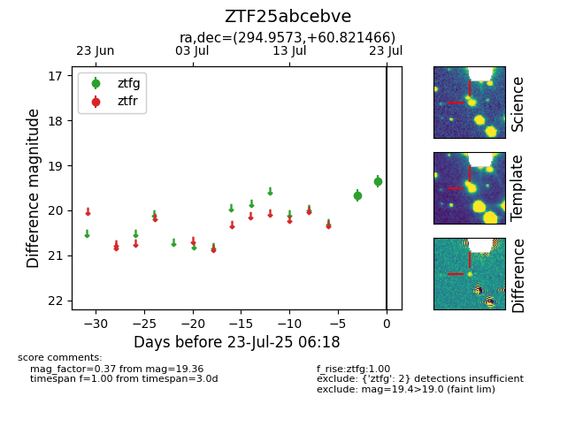

Target ZTF25abcebve at 2025-07-23 12:37, see:
FINK: fink-portal.org/ZTF25abcebve
Lasair: lasair-ztf.lsst.ac.uk/objects/ZTF25abcebve
ALeRCE: alerce.online/object/ZTF25abcebve
alt names
ZTF25abcebve (ztf,fink)
coordinates:
equatorial (ra, dec) = (294.9573,+60.82147)
galactic (l, b) = (92.8707,+17.88964)
photometry
last ztfg=19.36
2 ztfg detections
